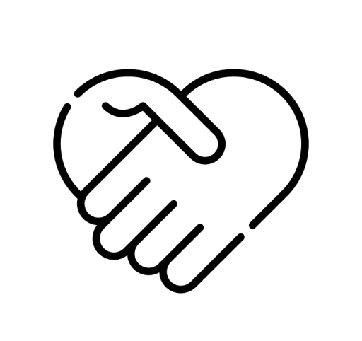

Mediapart est un quotidien d'actualité numérique français créé en 2008 et présidé par Carine Fouteau. Il emploie près de 140 personnes dont plus de 70 journalistes, et compte 220 000 abonnés. Reconnu pour la qualité de son journalisme d'enquête et ayant une ligne éditoriale orientée à gauche, le site est disponible en français, anglais et espagnol.

StreetPress est un site web français d'information, qui revendique un journalisme de gauche, engagé, consacré à l'investigation et aux cultures urbaines. Le site est officiellement lancé avec son agrément à la Commission paritaire des publications et des agences de presse en mars 20111. Le média indépendant est soutenu en juin 2022 par le Fonds pour une presse libre.
Blast est un site d'information, ainsi qu'une web TV lancée par le journaliste d'investigation Denis Robert sous la forme d'une société coopérative d'intérêt collectif et financée par le biais du financement participatif. Blast traite les thématiques de la politique, de l'écologie, l'investigation, de la géopolitique, de l'économie, de la santé, de la justice, des luttes sociales, de la culture, à travers des reportages, des lives, des chroniques, des émissions de débats, des entretiens, des conférences, des articles de fond et des formations
.png)
Politis est un hebdomadaire français d'actualités. Fondé en 1988 par Bernard Langlois et d'autres journalistes parmi lesquels Jean-Paul Besset, Michel Naudy, Rémy Galland, ce journal traite de l'actualité politique et sociale et se réclame de la gauche antilibérale et écologiste1. Il est membre fondateur de l'association Attac-France.